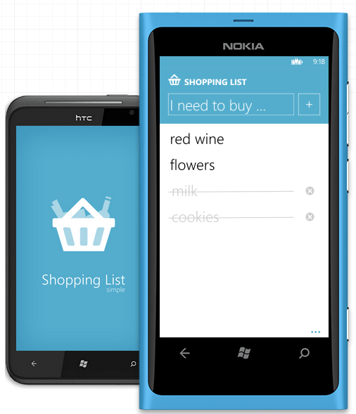

I was offered to to take part in the Red Stripe Deal promotion on Windows Phone with my Shopping List Simple app from 21st August to 28th August.
In this promotion, your app has to cost less than half of the normal price. The app normally costs 1.29 USD in most countries and 0.99 USD in Czech Republic, Slovakia and Russia to boost the sales. The minimum price in Windows Phone Store is 0.99 USD so the app had to be made free for the promotion. So I filled in the form saying that I want my app to be free in all the countries during the promotion. When the time of the promotion came, the price was set to free in all the countries except Czech Republic, Slovakia and Russia. First day, first problem.
[Read More]